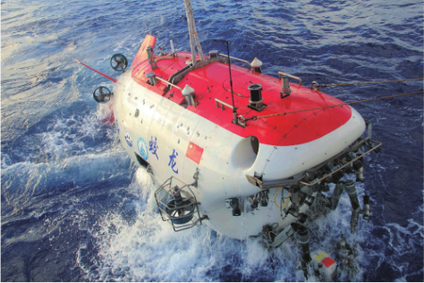

教材文本 · 实用类文本阅读
“蛟龙”探海
文章记录2012年6月24日“蛟龙”坐底7020米及潜航员与神舟九号航天员互致祝福的过程，通过背景资料、现场细节与抒情表达，表现科学探索中的严谨、协作与进取精神。
导读
文体与题材：报告文学节选，以载人深潜海试为主要事件，结合科技背景、现场叙述和文学性描写。
作者简介：许晨，报告文学作家，著有《第四极——中国“蛟龙号”挑战深海》等作品。《第四极》经四年采访创作而成。
文本出处：课文节选自《第四极——中国“蛟龙号”挑战深海》序章《人类的极地探索》（作家出版社、青岛出版社2016年版），选入教材时由作者改动并加题。
内容脉络：文章从人类对海洋的想象与探索引入，转向马里亚纳海沟的具体现场，补充设备、试验阶段和深海地理资料。随后回叙团队起航及前期试验，叙写6月24日的下潜过程、7020米坐底和海空互致祝福，结尾由两项成就抒发探索进取的自豪之情。
内容主旨：作品通过“蛟龙”海试及其与航天任务的呼应，赞颂科研人员严谨判断、团结协作和持续探索的精神，表达对我国科技进步的自豪与期待。
阅读重点：梳理事件时间与文章叙述次序，分清背景资料和现场行动；分析探测、监控与通话等细节怎样支持精神品质的判断；注意数字所指、纪录时点和“同类型”的范围，体会形象描写与抒情语句的作用。
课文
原文按结构分节；随文内容可定位至对应段落。
历史引入：人类的海洋想象与探索，导向马里亚纳海沟的试验现场。
古往今来，五大洲各种肤色的人向往海洋、憧憬海洋，创造了多少神奇而美丽的神话传说啊！从华夏大地的哪吒闹海、龙宫探宝，到古希腊的海神波塞冬、丹麦童话《海的女儿》，以及近代科幻小说《海底两万里》……无不绘声绘色地展现了那个充满无穷奥秘的世界，将人类对于深邃海底的兴趣和探求欲发挥得淋漓尽致。
于是，当历史老人脚步蹒跚地走到了20世纪，深达1000米、3000米、6000米的大洋深海中，相继出现了美国人、俄罗斯人、法国人、日本人的身影。那么，拥有绵长海岸线和辽阔海域的海洋大国的华夏子孙，又在哪里呢？
注释 · 批注 · 札记 6
教材原注 · 篇目出处
古往今来节选自《第四极——中国“蛟龙号”挑战深海》序章《人类的极地探索》（作家出版社、青岛出版社2016年版）。选入课本时，作者作了改动，并加了标题。
教材旁批 · 探索的背景
人类对于深邃海底的兴趣和探求欲从人类对海洋的永恒向往和无尽探索写起，为写“蛟龙”探海营造出富有诗意和历史感的背景。
释读：列举不同时代和地域的海洋想象，把海试放入人类认识海洋的长期历史中。神话与文学表现探求愿望，随后写的科学实践则使读者看到探索方式的发展。
教材原注 · 蹒跚
蹒跚〔蹒跚（pánshān）〕腿脚不灵便，走路缓慢、摇摆的样子。
札记 · 观察范围的转换
地球仪还在缓缓旋转着试比较“五大洲”“20世纪”与“定格”之后的具体海域。开头先交代广阔的历史背景，再把注意力引向特定地点和一次海试；“地球仪”组织了叙述的观察范围。分析时，可依次列出地点、时间和材料层次，说明历史概述怎样转入现场记叙。
教材原注 · 蓦然
蓦然〔蓦（mò）然〕突然，猛然。
教材旁批 · 转入现场
蓦然，定格于“蓦然”“定格”，文笔陡转，从辽远的背景直接切入现实中的试验海域。
释读：“缓缓旋转”先营造广阔的观察范围，“蓦然”“定格”再把注意力集中到西太平洋的具体海域，叙述由概述探索历史转入此次海试。
目标说明：作者介绍潜水器、海试积累与深海环境，说明7000米试验的意义。
公元2012年6月24日清晨，没有晴朗的海天，没有壮观的日出。大海如同一个情绪善变的孩子，时而风雨交加，时而电闪雷鸣。“向阳红09号”中国科学考察船迎风破浪，如定海神针般地停在预定海域。她那宽阔而坚实的甲板上，高高矗立着一台类似龙门吊的设备，伸出两只长长的手臂，怀抱着红白相间的小鲸鱼一样的机器。机身上漆着一面鲜红的五星红旗和两个醒目的蓝色大字——“蛟龙”！
对了！这就是举国关注、世界瞩目的中国载人潜水器“蛟龙号”，正在进行深潜7000米的海试。2009年的1000米、2010年的3000米、2011年的5000米，深潜海试一步步成功之后，我国自主研发、集成创新的7000米载人潜水器工程项目，迎来了冲击设计极限的海底试验。为了万无一失、确保成功，国家海洋局、科技部等部门选择了地球海洋最深点——著名的马里亚纳海沟。它全长2550千米，呈弧形，平均宽70千米，大部分水深在8000米以上，最深处位于斐查兹海渊，达11034米。
注释 · 批注 6
教材原注 · 龙门吊
龙门吊〔龙门吊〕一种桥架型起重机。
教材旁批 · “怀抱”的情味
怀抱着“怀抱”一词准确生动且富于感情。
释读：起重设备的两只长臂吊持潜水器，被写为人的手臂与怀抱。它既使设备的动作易于想象，又显出对潜水器的亲切感；这是形象化表达，设备的工作方式仍是起吊与承载。
教材原注 · 海渊
海渊〔海渊〕海沟中已测得的最深部分。
批注 · 分阶段的试验
2009年的1000米、2010年的3000米、2011年的5000米三个年份与对应深度构成逐级推进的顺序，说明7000米试验建立在既有试验积累之上。数字在这里展示技术验证的过程，随后才转入此次任务。
教材旁批 · 深海资料
这条海沟反复介绍马里亚纳海沟，既是客观记述，又表现了“蛟龙”探海难度之高、意义之大。
释读：海沟的位置、形态、深度及与珠穆朗玛峰的比较，帮助读者形成深海的尺度感。后文再说明7000米作业能力的意义，使环境资料与工程目标相联系。海沟最深处的深度和本次下潜深度属于不同数据。
注释 · 海沟深度与作业深度
下潜至7000米海沟最深处是地理背景，7000米是此轮载人潜水器海试的目标级别。本文后面记述的7020米是6月24日当次坐底数据；分析不同数字时，应先辨明测量对象与事件范围。
准备与下潜：团队经过多次试验，根据探测结果组织下潜并保持协同监控。
半个多月前，随着试验母船“向阳红09号”的一声汽笛长鸣，“蛟龙号”海试团队于2012年6月3日由江阴苏南国际码头起航，穿过长江吴淞口，踌躇满志地奔赴西太平洋，奔向那片遥远而亲近的海域。
马里亚纳海沟，中国“蛟龙”来了！
凭着这种志向与精神，我们英雄的海试团队劈波斩浪，按计划在这片海域开始了一次又一次的深潜试验。
这一天——6月24日，星期天，是我国航天工程——“神舟九号”飞船与“天宫一号”目标飞行器手控交会对接的日子。此前，国家海试领导小组批准“蛟龙号”同日冲击深潜7000米，争取创造上天入海的奇迹。
“太好了！这太有意义了！我们已经作好了充分准备，保证完成任务！”
尽管天一放亮，就遇到了风雨突袭，海况不佳，但周密严格的探测表明，天气条件会逐渐好转，且海面以下完全具备试验条件。海试现场指挥部下定决心：按时下潜！北京时间4时20分，海试团队举行了简短的出征仪式。三名潜航员叶聪、刘开周、杨波身着蓝色的潜航工作服，与大家相互击掌，微笑着进入潜水器。
注释 · 批注 · 评议 4
教材原注 · 踌躇满志
踌躇满志〔踌躇（chóuchú）满志〕心满意足、从容自得的样子。
教材旁批 · 遥远与亲近
遥远而亲近海试地点距出发港口万里之遥，为什么是“亲近”的？
释读：“遥远”写空间距离，“亲近”写情感关系。联系开篇人类对海洋的向往和科研团队的主动奔赴，这片海域是长期追求的研究对象，因此在愿望和使命上令人感到亲近。
评议 · 行动的依据
周密严格的探测表明决定下潜之前，团队考察天气变化与海面以下的试验条件。文字把数据判断放在行动决心之前，表明信心具有周密探测和充分准备的基础。
教材旁批 · 紧张有序
紧张有序联系上下文，注意细节，体会作者是怎样表现“紧张有序”的。
释读：监控数据不断显示，水下与水面保持通话，表明任务持续进行、人员密切协同；“沉着冷静”又写出工作状态的稳定。紧张来自任务的重要性，有序体现于具体的监测和交流。
突破时刻：“蛟龙”坐底7020米，潜航员向正在执行对接任务的航天员致意。
北京时间9时07分，话筒里传来了潜航员、主驾驶叶聪的声音：“这里是‘蛟龙’，这里是‘蛟龙’。我们已经坐底7020米！”指挥部里一阵沸腾。这是中国载人深潜创造的最新纪录，也是世界同类型载人潜水器的最大下潜深度。
而这时候，正在太空飞翔的“神舟九号”航天员景海鹏等三人，按计划操纵着飞船逐步接近“天宫一号”，实施手控交会对接。西太平洋7000米海底，叶聪代表此次下潜的潜航员，庄严地向“神舟九号”送上热烈而亲切的祝福：
“祝愿景海鹏、刘旺、刘洋三位航天员与‘天宫一号’对接顺利！祝愿我国载人航天、载人深潜事业取得辉煌成就！”

注释 · 批注 3
教材原注 · 坐底
坐底〔坐底〕可下潜航行器下潜降落至海床上。
注释 · 纪录的时间与类别
世界同类型载人潜水器这里记述2012年6月24日当次7020米下潜及当时的同类型纪录。“同类型”限定为同类作业型载人潜水器。中国科学院沈阳自动化研究所后来的总结记载，整轮7000米级海试的最大下潜深度为7062米；两数分别对应当次试验和整轮海试。参见当日报道与海试总结。
教材旁批 · 海空对话
“神舟九号”“神舟”与“蛟龙”，奇迹般的海空“对话”，展现了我国科技发展的伟大成就。
释读：两项任务在同一天展开，双方互致祝福，使海试与航天形成呼应。后文交代祝福经过声波与陆地转发，说明这里的“对话”由通信中继实现。
海空呼应：双方经通信中继互致祝福，作者赞颂共同的探索精神。
由于技术上的原因，如今还未能实现海底与太空的直接通话，潜航员的祝福通过声波穿透深海，传到陆地基站，再由陆地转发到茫茫太空中的“神舟九号”舱内。显然，航天员们听到了，并且受到了极大鼓舞。中午12时55分，他们成功驾驶“神舟九号”与“天宫一号”实现了刚性连接。
在向祖国报喜的同时，景海鹏代表“神舟九号”飞行乘组也向“蛟龙号”致辞：
“今天，在我们顺利完成手控交会对接任务的时候，喜闻‘蛟龙号’创造了中国载人深潜的新纪录。在此，我们向叶聪、刘开周、杨波三位深潜员致以崇高的敬意，祝愿中国载人深潜事业取得新的更大成就！祝愿我们的祖国繁荣昌盛！”
句注 · 注释 · 批注 3
读读写写
蛟龙 憧憬 蹒跚 蓦然 矗立 瞩目 突袭 宏图 绘声绘色 淋漓尽致 浩瀚无际 波澜起伏 踌躇满志 劈波斩浪
研读题
以下四题为自编研读题。
第1题 · 叙述次序
自编研读题：文章怎样从辽远的背景进入6月24日的现场？请梳理海试与海空互致祝福的主要过程，并说明回叙6月3日起航的作用。
参考答案1展开 / 收起
参考作答
- 开篇列举海洋神话、文学想象与现代探索，由宏观背景引出中国载人深潜的问题；“地球仪”旋转后“蓦然”“定格”，使叙述迅速集中到此次试验海域。
- 文章先点明6月24日现场并介绍技术背景，再回叙6月3日起航和前期多次试验，补足团队抵达海域及开展此次试验的准备过程。
- 回到6月24日，团队根据探测结果组织下潜，9时07分报告坐底7020米。潜航员送出祝福；神舟九号完成手控交会对接后，航天员也向深潜团队致意，两项任务由同日行动和通信往来联系起来。
审题与考查点
题目区分文章的叙述次序与事件实际先后。前者包含背景引入和回叙，后者要落实起航、试验、坐底与互致祝福，不能只按段落出现次序罗列日期。
文本分析
从探索历史集中到一处海域查看证据 ↗
开篇让读者先了解探索愿望和中国深潜的时代课题。“地球仪”从转动到定格，是作者组织观察范围的写法，使焦点从全球转入马里亚纳海沟。
“蓦然”的突转带来节奏变化，随后具体日期、海况和船上设备把叙述落实为一场现场事件。
文本依据：那么，拥有绵长海岸线和辽阔海域的海洋大国的华夏子孙，又在哪里呢？；地球仪还在缓缓旋转着——；蓦然，定格于浩瀚无际的西太平洋中一片波澜起伏的海域。；公元2012年6月24日清晨。
回叙交代抵达与准备查看证据 ↗
“半个多月前”明示时间回转，6月3日起航补足团队此前的行动。紧接着的“一次又一次”说明到达后已有试验积累。
这些材料解释6月24日的行动如何得到准备，随后“这一天——6月24日”重新接回主要事件。
文本依据：半个多月前，随着试验母船“向阳红09号”的一声汽笛长鸣，“蛟龙号”海试团队于2012年6月3日由江阴苏南国际码头起航；按计划在这片海域开始了一次又一次的深潜试验。；这一天——6月24日，星期天。
用明确时刻与通信过程连接两项任务查看证据 ↗
4时20分写的是出征仪式，9时07分是坐底报告；这些时间标记使事件推进清楚。海底祝福与12时55分完成航天对接、对接后的回贺相接，构成两项任务的呼应。
两项技术任务各自执行，互致祝福体现参与者的共同情感。它们的同日成功不能据此解释成一项任务在技术上造成另一项任务成功。
文本依据：北京时间4时20分，海试团队举行了简短的出征仪式。；北京时间9时07分，话筒里传来了潜航员、主驾驶叶聪的声音；中午12时55分，他们成功驾驶“神舟九号”与“天宫一号”实现了刚性连接。；在向祖国报喜的同时，景海鹏代表“神舟九号”飞行乘组也向“蛟龙号”致辞：。
知识点
解题方法
- 先按原文出现顺序标出日期和时间，再另列事件实际发生的先后。
- 观察“半个多月前”与“这一天”等连接语，说明回叙补充了什么内容。
- 按海试、航天和通信三类行动核对主体，概括它们怎样在结尾汇合。
易误辨析
4时20分是仪式时间，原文未以它直接标明潜水器开始下潜；“而这时候”联系同时段的行动，也不能证明双方进行实时直接通话。
答案组织与检核
答案同时回答开篇过渡、回叙作用和主要过程，避免只列日期而忽略叙述安排。
第2题 · 背景与意义
自编研读题：文章为何较详细地介绍历次海试及马里亚纳海沟？这些资料怎样帮助理解此次7000米试验的难度与意义？
参考答案2展开 / 收起
参考作答
- 以2009年至2011年逐步增加的试验深度，说明7000米海试建立在此前验证的基础上，显示技术发展的连续过程。
- 海沟的位置、深度等数字提供具体的空间尺度；将珠穆朗玛峰置入海沟的设想，使深度更易理解，帮助读者认识深海作业环境。
- 文章把下潜深度与到达全球大部分海洋深处开展作业的能力联系起来，说明试验价值涉及设备技术验证及未来科研作业；7020米纪录则应按2012年6月24日和“同类型载人潜水器”的限定理解。
审题与考查点
题目要求解释背景资料的功能。应先辨数字分别指历次试验、海沟环境还是本次成果，再说明它们如何支撑难度和意义的判断。
文本分析
历次深度构成逐级验证的过程查看证据 ↗
年份和深度一一对应，按1000米、3000米、5000米的顺序推进，7000米任务因此具有已经积累的技术基础。
这一组数字写的是历次海试阶段，不能与海沟深度或当天坐底深度相混。
文本依据：2009年的1000米、2010年的3000米、2011年的5000米，深潜海试一步步成功之后；迎来了冲击设计极限的海底试验。。
数据与比较共同形成深度感查看证据 ↗
海沟长度、宽度、水深等数据，从不同维度描述试验区域。珠穆朗玛峰的设想则借较为熟悉的地形高度，帮助读者理解深海尺度。
环境介绍使海试所处的空间具体可感；文章所写的7000米目标在此背景中显出工程挑战。
文本依据：它全长2550千米，呈弧形，平均宽70千米，大部分水深在8000米以上；如果把地球第三极珠穆朗玛峰填到里边，它的峰顶都不能露出海面。。
由到达深度转向科研作业能力查看证据 ↗
正文明确把7000米与作业覆盖范围及集成技术成熟相联系，表明深度纪录服务于深海研究能力的提高。
后文“最新纪录”属于当日报道，“同类型”又限定了比较对象。阅读科技材料时，必须保留时间和类别，才能准确说明成就。
文本依据：将标志着我国具备了到达全球99%以上海洋深处进行作业的能力，标志着“蛟龙号”载人潜水器集成技术的成熟。；这是中国载人深潜创造的最新纪录，也是世界同类型载人潜水器的最大下潜深度。。
知识点
解题方法
- 给每组数字注明对象，如历次试验深度、海沟深度和当次坐底深度。
- 将形象比较与客观数值对读，说明它们怎样共同帮助理解环境。
- 找出原文说明成果意义的句子，核对“作业能力”“当时”“同类型”等范围。
易误辨析
达到7020米不表示已到达文中所说的海沟最深处；同类型纪录也不能扩大为当今所有载人潜水器的全球总纪录。
答案组织与检核
先说材料提供的信息，再说它在理解事件中的作用。难度、技术意义和纪录范围分别表述，避免把“数字很多”作为结论。
第3题 · 细节与团队
自编研读题：作者怎样通过出征、下潜监控和坐底报告的细节，表现团队的科学态度与协作精神？请结合“紧张有序”的具体表现分析。
参考答案3展开 / 收起
参考作答
- 海况不佳时，团队先作周密严格的探测，确认天气趋势和水下试验条件后决定下潜，表现出依据实际条件作判断的严谨态度。
- 出征时的击掌和微笑显示准备充分之后的信心；下潜中持续监控数据，潜航员与水面人员沉着通话，表现出分工协作和稳定的工作状态。
- 坐底报告以准确深度确认结果，指挥部随后由沉着工作转为“一阵沸腾”。情绪变化以任务进展为依据，既表现工作过程的克制专注，也写出成果实现时的共同喜悦。
审题与考查点
“紧张有序”同时包含任务的重要与工作的秩序。分析应观察各岗位怎样获得信息、作出决策和保持沟通，再解释情态细节。
文本分析
探测结果支持行动判断查看证据 ↗
“尽管”承认风雨带来的困难，“但”转入探测结果。天气好转的趋势与水下具备条件，是决定按时下潜的依据。
这种句序把科学判断写在行动之前，团队的勇气由准备和信息支持。
文本依据：尽管天一放亮，就遇到了风雨突袭，海况不佳，但周密严格的探测表明，天气条件会逐渐好转，且海面以下完全具备试验条件。。
人物动作与持续监控共同显示秩序查看证据 ↗
击掌与微笑写出人员相互鼓励及临行状态。进入水下后，叙述转向监控屏幕和通话声，从设备信息和人员交流两个方面写工作持续进行。
“不断”“不时”表明信息更新与沟通维持，“沉着冷静”显示应对方式稳定。因此“有序”有具体细节支撑。
文本依据：三名潜航员叶聪、刘开周、杨波身着蓝色的潜航工作服，与大家相互击掌，微笑着进入潜水器。；监控屏幕上不断显示着水下各种数据，扬声器中不时响起“蛟龙号”潜航员和水面控制人员之间沉着冷静的通话声。。
由专业报告转入共同欢庆查看证据 ↗
叶聪先报出潜水器身份及7020米坐底结果，指挥部随后沸腾，喜悦由可确认的试验进展引发。
前面的冷静通话与此时的热烈反应相对照，使重要任务完成后的情绪释放更加鲜明，体现群体对共同目标的投入。
知识点
解题方法
- 先找出决策依据，说明行动面对什么困难和已确认的条件。
- 将潜航员、指挥部和水面人员的动作分别列出，观察它们的配合。
- 比较报告前后的声音与情态，说明情绪变化随什么事实发生。
易误辨析
“紧张”并不等于人员惊慌，“按时下潜”也不意味着忽视风险。原文的探测、监控和冷静通话正是判断团队状态的关键。
答案组织与检核
每条先写可见细节，再说明它支持的品质。避免用“勇敢”“团结”“严谨”等词代替分析过程。
第4题 · 语言表达与情感
自编研读题：“怀抱”“遥远而亲近”“好啊！”等表达有什么作用？联系海空互致祝福的场景，分析本文如何在记述科技事件的同时表达情感。
参考答案4展开 / 收起
参考作答
- “怀抱”把起重设备的双臂吊持写得像人的拥抱，配合“小鲸鱼”的比喻，使机械形态易于想象，流露对潜水器的亲切感。
- “遥远”指航程的空间距离，“亲近”体现团队对研究对象的向往和投入。两词从不同角度写同一海域，表现追求目标时的亲近感与使命感。
- 海空互致祝福的直接引语，让双方的尊重、鼓励和共同愿望通过具体话语呈现。结尾“好啊！”直接抒发喜悦，再概括探索进取的精神，形成由事件叙述到情感评价的收束。
审题与考查点
题目要求解释语境中的词义及表达效果。机械形态、空间距离和情感态度应分别辨明；引语分析还须说明谁向谁表达了何种愿望。
文本分析
由机械动作形成亲切的形象查看证据 ↗
“长长的手臂”“怀抱”把设备写出人的动作特点，“小鲸鱼”则取海洋生物的外形帮助读者想象潜水器。
这些表达使科技设备可见、可感，并融入作者亲近和珍爱的态度；其基础仍是甲板上的实际设备与装载状态。
空间距离与精神接近构成复合感受查看证据 ↗
“遥远”承接从江阴奔赴西太平洋的航程，“亲近”联系开篇的探索愿望和团队的满怀信心，分别指空间和情感。
同一海域在不同维度上可以具有这两种特点。搭配使科研对象与人的理想发生联系，表达奔赴目标的热情。
文本依据：由江阴苏南国际码头起航，穿过长江吴淞口，踌躇满志地奔赴西太平洋，奔向那片遥远而亲近的海域。；人类对于深邃海底的兴趣和探求欲。
双方话语与直接感叹共同表达喜悦查看证据 ↗
潜航员祝愿对接顺利，航天员回贺深潜成果，各自面向另一组同行，体现相互尊重与共同追求。引语让这些情感有明确的说话者和对象。
“好啊”承接两项任务及互贺，作者直接参与评价。随后从当天的成果推向持续探索的愿景，既完成事件的收束，也呼应开篇人类的海洋向往。
文本依据：“祝愿景海鹏、刘旺、刘洋三位航天员与‘天宫一号’对接顺利！祝愿我国载人航天、载人深潜事业取得辉煌成就！”；祝愿中国载人深潜事业取得新的更大成就！祝愿我们的祖国繁荣昌盛！；好啊！“神舟”上天，“蛟龙”入海，海空连心，互致祝福。。
知识点
解题方法
- 解释词语在本句中指什么动作、位置或感受，辨明其字面依据。
- 把“遥远”“亲近”等词分别对应空间与情感，说明搭配是否在同一维度上冲突。
- 注明祝福的发出者与接受者，再联系结尾判断情感怎样由场景进入概括。
易误辨析
“亲近”不表示试验海域就在出发港附近；“海空对话”包含地面中继，不能因语言富有诗意而略去后文明确交代的传输过程。
答案组织与检核
答案依具体表达分条，分别说明形象、语境义和情感作用；对“生动”“自豪”等评价须有词句与关系支持。
参考文献
- 《文艺报》：《专家研讨许晨长篇报告文学〈第四极〉》，2016年11月16日。
- 教育部组织编写：《义务教育教科书·语文·七年级下册》，人民教育出版社，修订教材第23课《“蛟龙”探海》。
- 许晨：《第四极——中国“蛟龙号”挑战深海》，作家出版社、青岛出版社，2016年，序章《人类的极地探索》。
- 中国载人航天官方网站：《神九航天员与“蛟龙”号潜航员互致祝福》，2012年6月26日，报道6月24日的海试及交会对接。
- 刘开周、王晓辉：《“蛟龙”号控制系统的研制》，中国科学院沈阳自动化研究所，2018年7月26日。